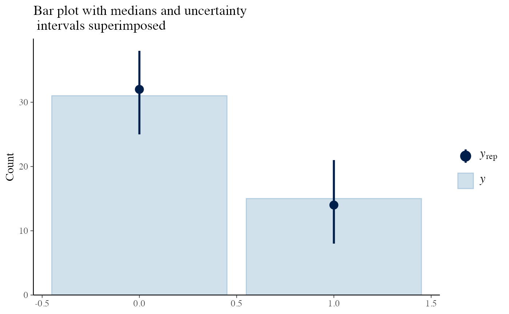
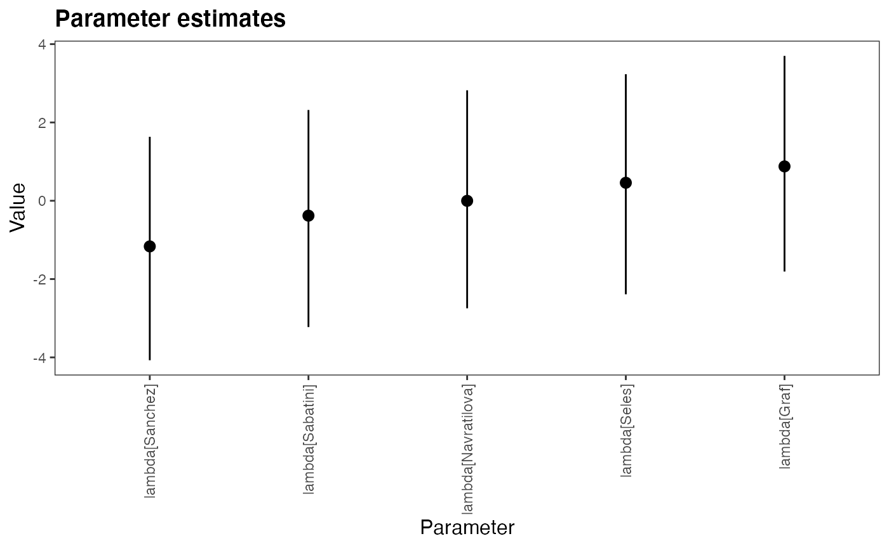
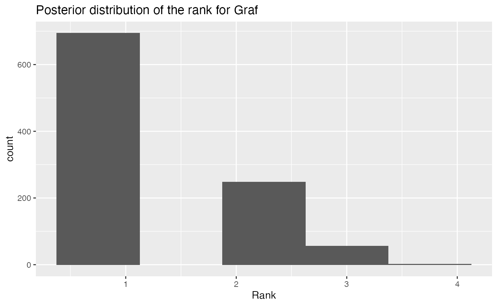

library(bpcs)
library(ggplot2)
library(dplyr)
library(tibble)
library(kableExtra)
library(bayesplot)
library(knitr)In this vignette, we provide an example of the usage of the bpcs package along with the core concepts to use the package.
The package requires installation of the rstan package (Stan Development Team 2020). For more details see the REAMDE.md document.
To install the latest version from Github:
remotes::install_github('davidissamattos/bpcs')After install we load the package with:
The bpcs package performs Bayesian estimation of Paired Comparison models utilizing Stan. We provide a series of models and auxiliary functions to help in the analysis and evaluation of the models. However, this package have the philosophy of ‘batteries not included’ for plots, tables and data transformation. There are already many great packages capable of performing create high quality plots, tables and that provides tools for data transformation. Since each user can have their own preferences, customization needs and data cleaning and transformation workflows, we designed not to enforce any particular framework or package. Our functions were designed to return cleaned data frames that can be used almost directly, or with few transformations in those packages.
At the moment, the only exception to this is the expand_aggregated_data function that receives a data frame with the number of wins for player 1 and the numbers of wins for player 2 and expand this aggregated data into a single match per row (that is required for our models). We include this function because this type of transformation is common since packages such as BradleyTerry2 (Turner, Firth, and others 2012) receives this type of aggregated data and many available datasets are presented like that.
With that said, we provide in the vignettes the code we use to transform the data and generate the tables and plots. The user is free to use/copy/modify these codes for their own use. For those we rely on the collection of packages tidyverse (Wickham et al. 2019), and the packages knitr (Xie 2014) and kableExtra (Zhu 2020).
In this example, we will use the example from tennis players from Agresti (Agresti 2003). The data tennis_agresti contains the information regarding tennis matches between 5 players, and who won the match, 0 for player0 or 1 for player1.
knitr::kable(tennis_agresti) %>%
kableExtra::kable_styling()| player0 | player1 | y | id |
|---|---|---|---|
| Seles | Graf | 0 | 1 |
| Seles | Graf | 0 | 2 |
| Seles | Graf | 1 | 3 |
| Seles | Graf | 1 | 4 |
| Seles | Graf | 1 | 5 |
| Seles | Sabatini | 0 | 6 |
| Seles | Navratilova | 0 | 7 |
| Seles | Navratilova | 0 | 8 |
| Seles | Navratilova | 0 | 9 |
| Seles | Navratilova | 1 | 10 |
| Seles | Navratilova | 1 | 11 |
| Seles | Navratilova | 1 | 12 |
| Seles | Sanchez | 0 | 13 |
| Seles | Sanchez | 0 | 14 |
| Graf | Sabatini | 0 | 15 |
| Graf | Sabatini | 0 | 16 |
| Graf | Sabatini | 0 | 17 |
| Graf | Sabatini | 0 | 18 |
| Graf | Sabatini | 0 | 19 |
| Graf | Sabatini | 0 | 20 |
| Graf | Sabatini | 1 | 21 |
| Graf | Sabatini | 1 | 22 |
| Graf | Sabatini | 1 | 23 |
| Graf | Navratilova | 0 | 24 |
| Graf | Navratilova | 0 | 25 |
| Graf | Navratilova | 0 | 26 |
| Graf | Sanchez | 0 | 27 |
| Graf | Sanchez | 0 | 28 |
| Graf | Sanchez | 0 | 29 |
| Graf | Sanchez | 0 | 30 |
| Graf | Sanchez | 0 | 31 |
| Graf | Sanchez | 0 | 32 |
| Graf | Sanchez | 0 | 33 |
| Graf | Sanchez | 1 | 34 |
| Sabatini | Navratilova | 0 | 35 |
| Sabatini | Navratilova | 1 | 36 |
| Sabatini | Navratilova | 1 | 37 |
| Sabatini | Sanchez | 0 | 38 |
| Sabatini | Sanchez | 0 | 39 |
| Sabatini | Sanchez | 0 | 40 |
| Sabatini | Sanchez | 1 | 41 |
| Sabatini | Sanchez | 1 | 42 |
| Navratilova | Sanchez | 0 | 43 |
| Navratilova | Sanchez | 0 | 44 |
| Navratilova | Sanchez | 0 | 45 |
| Navratilova | Sanchez | 1 | 46 |
We can fit a Bayesian Bradley-Terry model using the bpc function
m1 <- bpc(data = tennis_agresti,
player0 = 'player0',
player1 = 'player1',
result_column = 'y',
model_type = 'bt',
solve_ties = 'none', #there are no ties
show_chain_messages = T)
#>
#> SAMPLING FOR MODEL 'bt' NOW (CHAIN 1).
#> Chain 1:
#> Chain 1: Gradient evaluation took 0.000112 seconds
#> Chain 1: 1000 transitions using 10 leapfrog steps per transition would take 1.12 seconds.
#> Chain 1: Adjust your expectations accordingly!
#> Chain 1:
#> Chain 1:
#> Chain 1: Iteration: 1 / 2000 [ 0%] (Warmup)
#> Chain 1: Iteration: 200 / 2000 [ 10%] (Warmup)
#> Chain 1: Iteration: 400 / 2000 [ 20%] (Warmup)
#> Chain 1: Iteration: 600 / 2000 [ 30%] (Warmup)
#> Chain 1: Iteration: 800 / 2000 [ 40%] (Warmup)
#> Chain 1: Iteration: 1000 / 2000 [ 50%] (Warmup)
#> Chain 1: Iteration: 1001 / 2000 [ 50%] (Sampling)
#> Chain 1: Iteration: 1200 / 2000 [ 60%] (Sampling)
#> Chain 1: Iteration: 1400 / 2000 [ 70%] (Sampling)
#> Chain 1: Iteration: 1600 / 2000 [ 80%] (Sampling)
#> Chain 1: Iteration: 1800 / 2000 [ 90%] (Sampling)
#> Chain 1: Iteration: 2000 / 2000 [100%] (Sampling)
#> Chain 1:
#> Chain 1: Elapsed Time: 0.384703 seconds (Warm-up)
#> Chain 1: 0.434662 seconds (Sampling)
#> Chain 1: 0.819365 seconds (Total)
#> Chain 1:
#>
#> SAMPLING FOR MODEL 'bt' NOW (CHAIN 2).
#> Chain 2:
#> Chain 2: Gradient evaluation took 4.1e-05 seconds
#> Chain 2: 1000 transitions using 10 leapfrog steps per transition would take 0.41 seconds.
#> Chain 2: Adjust your expectations accordingly!
#> Chain 2:
#> Chain 2:
#> Chain 2: Iteration: 1 / 2000 [ 0%] (Warmup)
#> Chain 2: Iteration: 200 / 2000 [ 10%] (Warmup)
#> Chain 2: Iteration: 400 / 2000 [ 20%] (Warmup)
#> Chain 2: Iteration: 600 / 2000 [ 30%] (Warmup)
#> Chain 2: Iteration: 800 / 2000 [ 40%] (Warmup)
#> Chain 2: Iteration: 1000 / 2000 [ 50%] (Warmup)
#> Chain 2: Iteration: 1001 / 2000 [ 50%] (Sampling)
#> Chain 2: Iteration: 1200 / 2000 [ 60%] (Sampling)
#> Chain 2: Iteration: 1400 / 2000 [ 70%] (Sampling)
#> Chain 2: Iteration: 1600 / 2000 [ 80%] (Sampling)
#> Chain 2: Iteration: 1800 / 2000 [ 90%] (Sampling)
#> Chain 2: Iteration: 2000 / 2000 [100%] (Sampling)
#> Chain 2:
#> Chain 2: Elapsed Time: 0.399081 seconds (Warm-up)
#> Chain 2: 0.441439 seconds (Sampling)
#> Chain 2: 0.84052 seconds (Total)
#> Chain 2:
#>
#> SAMPLING FOR MODEL 'bt' NOW (CHAIN 3).
#> Chain 3:
#> Chain 3: Gradient evaluation took 3.9e-05 seconds
#> Chain 3: 1000 transitions using 10 leapfrog steps per transition would take 0.39 seconds.
#> Chain 3: Adjust your expectations accordingly!
#> Chain 3:
#> Chain 3:
#> Chain 3: Iteration: 1 / 2000 [ 0%] (Warmup)
#> Chain 3: Iteration: 200 / 2000 [ 10%] (Warmup)
#> Chain 3: Iteration: 400 / 2000 [ 20%] (Warmup)
#> Chain 3: Iteration: 600 / 2000 [ 30%] (Warmup)
#> Chain 3: Iteration: 800 / 2000 [ 40%] (Warmup)
#> Chain 3: Iteration: 1000 / 2000 [ 50%] (Warmup)
#> Chain 3: Iteration: 1001 / 2000 [ 50%] (Sampling)
#> Chain 3: Iteration: 1200 / 2000 [ 60%] (Sampling)
#> Chain 3: Iteration: 1400 / 2000 [ 70%] (Sampling)
#> Chain 3: Iteration: 1600 / 2000 [ 80%] (Sampling)
#> Chain 3: Iteration: 1800 / 2000 [ 90%] (Sampling)
#> Chain 3: Iteration: 2000 / 2000 [100%] (Sampling)
#> Chain 3:
#> Chain 3: Elapsed Time: 0.391261 seconds (Warm-up)
#> Chain 3: 0.403291 seconds (Sampling)
#> Chain 3: 0.794552 seconds (Total)
#> Chain 3:
#>
#> SAMPLING FOR MODEL 'bt' NOW (CHAIN 4).
#> Chain 4:
#> Chain 4: Gradient evaluation took 4.1e-05 seconds
#> Chain 4: 1000 transitions using 10 leapfrog steps per transition would take 0.41 seconds.
#> Chain 4: Adjust your expectations accordingly!
#> Chain 4:
#> Chain 4:
#> Chain 4: Iteration: 1 / 2000 [ 0%] (Warmup)
#> Chain 4: Iteration: 200 / 2000 [ 10%] (Warmup)
#> Chain 4: Iteration: 400 / 2000 [ 20%] (Warmup)
#> Chain 4: Iteration: 600 / 2000 [ 30%] (Warmup)
#> Chain 4: Iteration: 800 / 2000 [ 40%] (Warmup)
#> Chain 4: Iteration: 1000 / 2000 [ 50%] (Warmup)
#> Chain 4: Iteration: 1001 / 2000 [ 50%] (Sampling)
#> Chain 4: Iteration: 1200 / 2000 [ 60%] (Sampling)
#> Chain 4: Iteration: 1400 / 2000 [ 70%] (Sampling)
#> Chain 4: Iteration: 1600 / 2000 [ 80%] (Sampling)
#> Chain 4: Iteration: 1800 / 2000 [ 90%] (Sampling)
#> Chain 4: Iteration: 2000 / 2000 [100%] (Sampling)
#> Chain 4:
#> Chain 4: Elapsed Time: 0.403316 seconds (Warm-up)
#> Chain 4: 0.409184 seconds (Sampling)
#> Chain 4: 0.8125 seconds (Total)
#> Chain 4:After the chain converges to find the result we can investigate if everything went right. For that we can use the excellent tool provided in the shinystan (Gabry 2018) package that helps to assess the convergence of the chains.
The bpcs package provides a tiny wrapper to launch it automatically with some default parameters.
launch_shinystan(m1)Alternatively, you can retrieve the stanfit object and launch it with your own parameters.
stanfit <- get_stanfit(m1)
shinystan::launch_shinystan(stanfit)If you prefer to investigate without shinystan we can retrieve the stanfit object and investigate ourselves or with the help of the bayesplot package (Gabry et al. 2019). Here we need the stanfit and the stan posterior matrix to proceed. The indexes in Stan refer to the names and indexes available at the lookup table.
knitr::kable(m1$lookup_table)| Names | Index |
|---|---|
| Seles | 1 |
| Graf | 2 |
| Sabatini | 3 |
| Navratilova | 4 |
| Sanchez | 5 |
stanfit <- get_stanfit(m1)
posterior<-rstan::extract(stanfit,inc_warmup=T,permuted=F)Getting the traceplots:
bayesplot::mcmc_trace(posterior,pars = c("lambda[1]","lambda[2]","lambda[3]","lambda[4]"), n_warmup=1000)Verifying the Rhat and neff using the functions from rstan
rstan::summary(stanfit ,pars=c('lambda'))$summary
#> mean se_mean sd 2.5% 25% 50%
#> lambda[1] 0.49950878 0.05663572 1.435974 -2.469739 -0.39951916 0.53473704
#> lambda[2] 0.93698157 0.05424043 1.401499 -1.899990 0.01925357 0.95090775
#> lambda[3] -0.35520332 0.05431091 1.413447 -3.299205 -1.28462549 -0.34908400
#> lambda[4] 0.03037174 0.05592683 1.425695 -2.890638 -0.88414125 0.08107425
#> lambda[5] -1.13743569 0.05533482 1.433258 -4.115115 -2.06330306 -1.11172938
#> 75% 97.5% n_eff Rhat
#> lambda[1] 1.4598704 3.183084 642.8542 1.012289
#> lambda[2] 1.9122982 3.504166 667.6353 1.014320
#> lambda[3] 0.6144231 2.296553 677.3061 1.013087
#> lambda[4] 1.0117744 2.718469 649.8501 1.012531
#> lambda[5] -0.1541211 1.556148 670.8905 1.011823We first get the observed values and then the predictive values of the original dataframe. We can get predictive values with the predictive function and passing a data frame with the values we want to predict (in this case the original one). Note that we need to have the same column names in this new data frame
y<-as.vector(tennis_agresti$y)
yrep<-predict(m1,tennis_agresti,n=100,return_matrix = T)
yrep<-yrep[,1:46] #from column 47 we have if it was a tie or not. We just need to remove this
bayesplot::ppc_bars(y=y, yrep=yrep) +
labs(title = 'Bar plot with medians and uncertainty\n intervals superimposed')
The plots indicate a good model as the predictive posterior and the observed values agree largely.
Now that we are confident that our model is correct, we can create some tables to report our results.
To see the results in the console the summary function provides a good overview of the model. With parameters, probability of winning and a ranking.
summary(m1)
#> Estimated baseline parameters with HPD intervals:
#>
#>
#> Parameter Mean HPD_lower HPD_higher n_eff Rhat
#> -------------------- ------ ---------- ----------- ------- -----
#> lambda[Seles] 0.50 -2.23 3.40 642.85 1.01
#> lambda[Graf] 0.94 -1.78 3.58 667.64 1.01
#> lambda[Sabatini] -0.36 -3.13 2.44 677.31 1.01
#> lambda[Navratilova] 0.03 -2.82 2.75 649.85 1.01
#> lambda[Sanchez] -1.14 -4.14 1.49 670.89 1.01
#> NOTES:
#> * A higher lambda indicates a higher team ability
#>
#>
#> Posterior probabilities:
#> These probabilities are calculated from the predictive posterior distribution
#> for all player combinations
#>
#>
#> i j i_beats_j
#> ------------ ------------ ----------
#> Graf Navratilova 0.68
#> Graf Sabatini 0.77
#> Graf Sanchez 0.86
#> Graf Seles 0.60
#> Navratilova Sabatini 0.58
#> Navratilova Sanchez 0.75
#> Navratilova Seles 0.40
#> Sabatini Sanchez 0.68
#> Sabatini Seles 0.30
#> Sanchez Seles 0.20
#>
#>
#> Rank of the players' abilities:
#> The rank is based on the posterior rank distribution of the lambda parameter
#>
#>
#> Parameter MedianRank MeanRank StdRank
#> -------------------- ----------- --------- --------
#> lambda[Graf] 1 1.37 0.60
#> lambda[Seles] 2 2.11 0.91
#> lambda[Navratilova] 3 3.04 0.85
#> lambda[Sabatini] 4 3.67 0.84
#> lambda[Sanchez] 5 4.80 0.47If we want to create nicer tables and export them to latex/html we can leverage this with the kable function and the kableExtra package. Note that for extensive customization (and examples) we refer to the packages documentation.
Parameter table with HPD intervals
knitr::kable(get_hpdi_parameters(m1), caption = 'Parameter distribution and the High Posterior Density intervals', digits = 2) %>%
kable_styling()| Parameter | Mean | HPD_lower | HPD_higher | n_eff | Rhat |
|---|---|---|---|---|---|
| lambda[Seles] | 0.50 | -2.23 | 3.40 | 642.85 | 1.01 |
| lambda[Graf] | 0.94 | -1.78 | 3.58 | 667.64 | 1.01 |
| lambda[Sabatini] | -0.36 | -3.13 | 2.44 | 677.31 | 1.01 |
| lambda[Navratilova] | 0.03 | -2.82 | 2.75 | 649.85 | 1.01 |
| lambda[Sanchez] | -1.14 | -4.14 | 1.49 | 670.89 | 1.01 |
Plot the HPD intervals of the strength
hpdi <- get_hpdi_parameters(m1) %>%
dplyr::filter(startsWith(Parameter, "lambda"))
ggplot2::ggplot(hpdi, aes(x = Parameter)) +
ggplot2::geom_pointrange(aes(ymin = HPD_lower,
ymax = HPD_higher,
y = Mean)) +
ggplot2::labs(y = "Estimate", x = "Player", title = "HPDI interval of the strength of the players") +
ggplot2::coord_flip()
prob_table<-get_probabilities(m1)$Table
knitr::kable(prob_table, caption = 'Probabilities of one player beating the other', digits = 2) %>%
kableExtra::kable_styling()| i | j | i_beats_j |
|---|---|---|
| Graf | Navratilova | 0.69 |
| Graf | Sabatini | 0.77 |
| Graf | Sanchez | 0.87 |
| Graf | Seles | 0.59 |
| Navratilova | Sabatini | 0.59 |
| Navratilova | Sanchez | 0.73 |
| Navratilova | Seles | 0.39 |
| Sabatini | Sanchez | 0.67 |
| Sabatini | Seles | 0.31 |
| Sanchez | Seles | 0.18 |
We might also be interested in ranking the players based on their ability \(lambda\). In the Bayesian case, we sample the posterior distribution of \(lambda\) and rank them so we have posterior distribution of the ranks. This can be achieve with the function get_rank_of_players.
ranking <- get_rank_of_players(m1)We can produce a table with the values of this dataframe.
t <- ranking %>% dplyr::select(Parameter, MedianRank, StdRank)
knitr::kable(t, caption = 'Rank of the players') %>%
kable_styling()| Parameter | MedianRank | StdRank |
|---|---|---|
| lambda[Graf] | 1 | 0.6271909 |
| lambda[Seles] | 2 | 0.9295849 |
| lambda[Navratilova] | 3 | 0.8982220 |
| lambda[Sabatini] | 4 | 0.8471090 |
| lambda[Sanchez] | 5 | 0.5247040 |
If we want to visualize the histogram of the rank distribution of each player.
ggplot2::ggplot()+
ggplot2::geom_histogram(aes(x=ranking$PosteriorRank[1]$rank),bins = 5)+
ggplot2::labs(title = 'Posterior distribution of the rank for Graf', x='Rank')
To predict new results we need a data frame similar to the one used to fit the data. We use the same function as in the predicted posterior but now we provide the data we want to predict instead of the original data. Lets predict who is the winner for all games from Seles. Now we don’t want to return the matrix but a data frame
tennis_new_games<- tibble::tribble(~player0, ~player1,
'Seles', 'Graf',
'Seles', 'Sabatini',
'Seles', 'Navratilova',
'Seles', 'Sanchez')
y_seles<-predict(m1,tennis_new_games,n=100)
#Now let's summarize the posterior
y_seles <- dplyr::mutate(y_seles, avg_win_player1 = rowMeans(select(y_seles, starts_with('y_pred'))))
y_seles %>%
dplyr::select(player0, player1,avg_win_player1) %>%
knitr::kable()| player0 | player1 | avg_win_player1 |
|---|---|---|
| Seles | Graf | 0.63 |
| Seles | Sabatini | 0.37 |
| Seles | Navratilova | 0.42 |
| Seles | Sanchez | 0.22 |
If the average number of wins of player 1 is higher than 0.5 than player 1 wins more times than player 0.
Note that this is consistent with the obtained ranking and the probabilities of beating.
Agresti, Alan. 2003. Categorical Data Analysis. Vol. 482. John Wiley & Sons.
Gabry, Jonah. 2018. Shinystan: Interactive Visual and Numerical Diagnostics and Posterior Analysis for Bayesian Models. https://CRAN.R-project.org/package=shinystan.
Gabry, Jonah, Daniel Simpson, Aki Vehtari, Michael Betancourt, and Andrew Gelman. 2019. “Visualization in Bayesian Workflow.” J. R. Stat. Soc. A 182 (2): 389–402.
Stan Development Team. 2020. “RStan: The R Interface to Stan.” https://mc-stan.org/.
Turner, Heather, David Firth, and others. 2012. “Bradley-Terry Models in R: The Bradleyterry2 Package.” Journal of Statistical Software 48 (9).
Wickham, Hadley, Mara Averick, Jennifer Bryan, Winston Chang, Lucy D’Agostino McGowan, Romain François, Garrett Grolemund, et al. 2019. “Welcome to the tidyverse.” Journal of Open Source Software 4 (43): 1686.
Xie, Yihui. 2014. “Knitr: A Comprehensive Tool for Reproducible Research in R.” In Implementing Reproducible Computational Research, edited by Victoria Stodden, Friedrich Leisch, and Roger D. Peng. Chapman; Hall/CRC.
Zhu, Hao. 2020. KableExtra: Construct Complex Table with ’Kable’ and Pipe Syntax. https://CRAN.R-project.org/package=kableExtra.